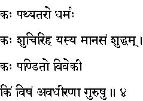
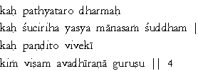

|

|
Verse 4 - Meaning:
Q:What is the most beneficial thing ?(kah pathyataro)
A:Dharma, or the path of righteousness is.
Q: Who is the clean person ? (kah sucir-iha)
A:That one whose mind (maanasam) is pure (suddham).
Q: Who is the real intelligent person? (kah pandito)
A:That one who is endowed with the power of discrimination (viveki).
Q: What is poison ? (kim visham)
A:Not abiding by the advice of wise, elderly people. (avadhirana gurusu).
|